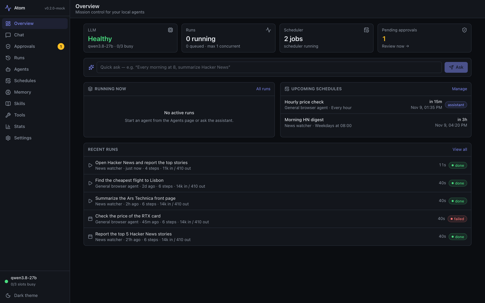
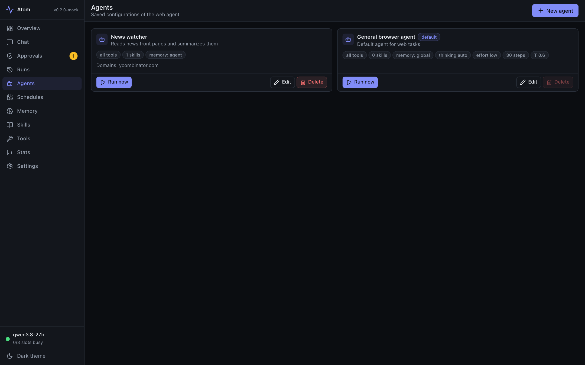
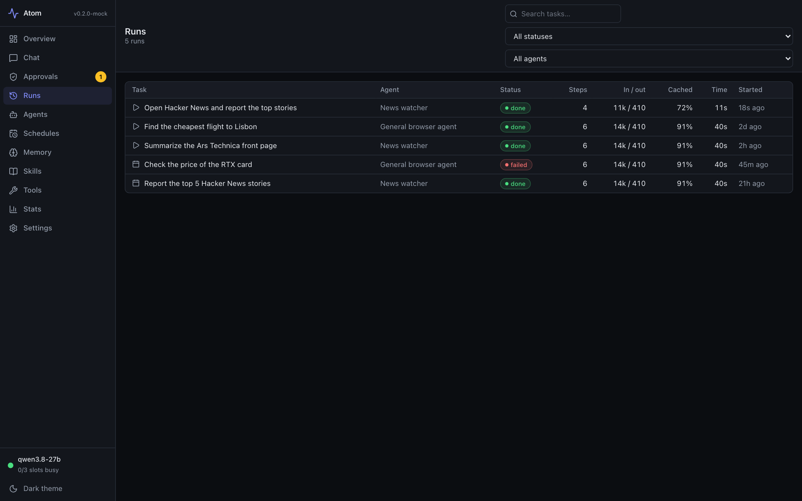
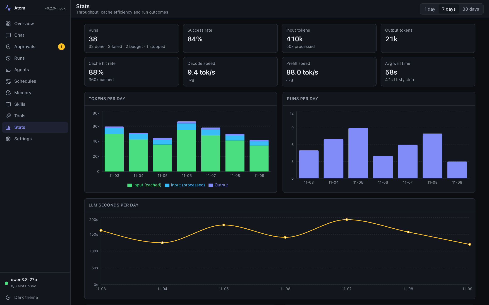
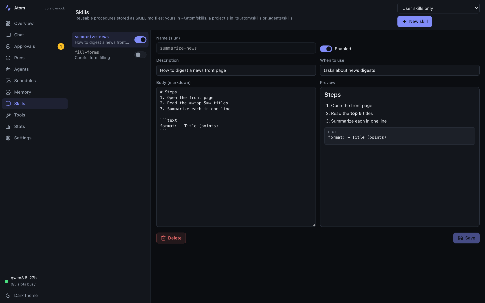

Atom drives a real browser with a 27B model running on your own Mac. Schedule it, chat with it, text it from Telegram. No cloud, no API bill, no data leaving your machine.

A complete platform, not a demo.
Clicks, types, reads and navigates real sites. Watch live screenshots and a step-by-step timeline, or stop it any time.
Qwen3.8-27B or NousResearch Arete-27B on llama.cpp. Your data and passwords stay on your machine.
Download, start, stop and choose the default model from the dashboard, or give each agent its own.
Cron-style schedules run while you sleep, with full run history, traces and screenshots.
Ask in plain language. It proposes schedules, agents and memories; you approve. Attach images and documents (PDF, Word, Excel, CSV).
A context ring shows usage; older messages are summarised automatically so long chats keep their thread.
Chat with Atom from your phone, send photos and files, approve actions with buttons, get results and screenshots back.
Search, read and optionally send email. Google sign-in via OAuth, no password stored, several accounts.
Add your own integration with a small Python class, or plug in any MCP tool server (stdio or remote).
Reusable procedures and persistent memories, scoped globally or per agent.
Agents and chat can run commands in a working folder you choose, organised into projects.
Domain allowlists, private-network blocking, keychain secrets the model never sees, and human approval for anything persistent.
A live dashboard with dark and light themes.




Built for an M1 Max with 64 GB, works on any Apple Silicon Mac with enough memory.
# clone and start the model server and dashboard git clone https://github.com/alexander-uspenskiy/Atom.git cd Atom ops/start.sh # open the dashboard open http://127.0.0.1:8787